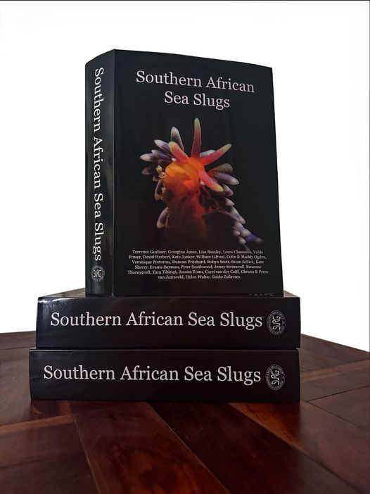

    <span>
        <a target="_blank" href="https://www.surg.co.za/sass.html"></a>
        <a target="_blank" href="https://www.marinespecies.org/index.php"></a>
        <a href="grid.html?rm=1">&nbsp;</a>
    </span>

    <span class="heading">Opisthobranchs of Sodwana Bay</span>
    <span class="slogan">An online species list / identification aid</span>
    <span class="menu">
        <a class="gridmenu" href="grid.html">Grid</a>
        <a class="listmenu" href="list.html">List</a>
        <a class="terminologymenu" href="terminology.html">Terminology</a>
        <a class="contributorsmenu" href="contributors.html">Contributors</a>
        <a class="aboutmenu" href="about.html">About/Contact</a>
    </span><a target="_blank" href="http://www.amoraydiving.com"></a>
